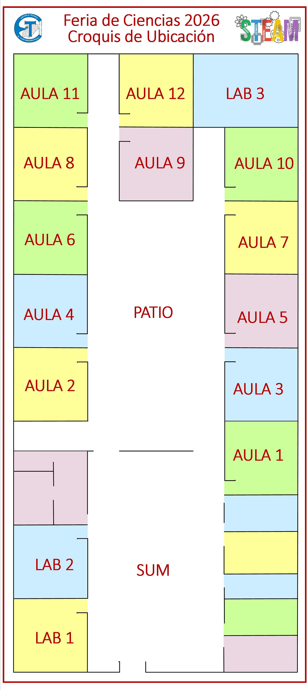
6to 3ra Extensión Aulica Anguá. (13 alumnos).
El proyecto "S.O.S. Anguá" surge de una observación directa en la Ruta Nacional 118, específicamente en el acceso al Paraje Anguá (Saladas, Corrientes). Al ingresar al paraje, se evidencia un contraste productivo drástico: mientras un sector es alto y eficiente, el otro es bajo e improductivo. Mediante un análisis comparativo con imágenes de Street View (2010-2024), demostramos que este sector bajo ha permanecido estancado durante una década debido a inundaciones recurrentes, lo que degrada la madera y la hace inviable para la Industria del Mueble.
Actualización 25 de junio de 2026
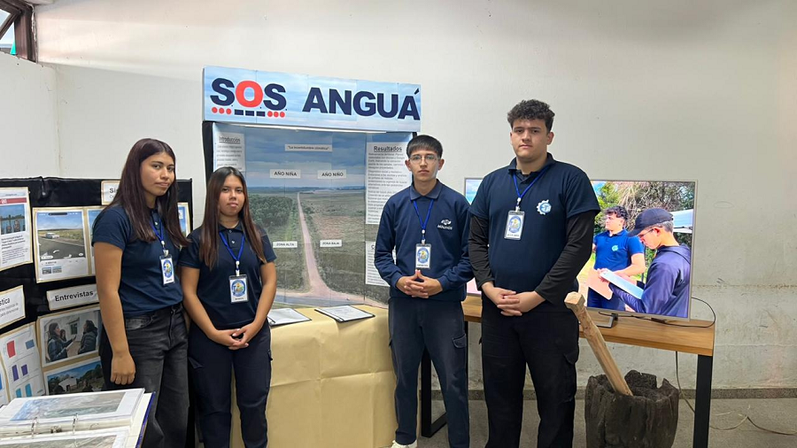
Regresar al Inicio1ro 4ta Turno Mañana. (58 alumnos).
El presente proyecto se denomina “Museo Biológico Escolar”. Se trabaja desde un enfoque STEAM, un modelo educativo que integra cinco áreas para resolver problemas reales. Sus siglas en inglés corresponden a S (Ciencia), T (Tecnología), E (Ingeniería), A(Artes) y M (Matemáticas) utilizando además a la asignatura lengua como eje transversal.
En esta oportunidad, se trabaja de manera interdisciplinaria en los siguientes espacios: Biología como eje central, con los Profesores orientadores Roque Montiel y Luxen Marcelo, donde se abordan temas como museo biológico, Colección Biológica, Seres vivos, Características, Biodiversidad, Flora y Fauna, Reino Vegetal y Animal. Como materia complementaria se incluye matemática (lectura e interpretación de gráfico circular), en arte (confección de dibujos) y lengua como materia transversal (técnicas de estudio).
El proyecto ofrecerá una oportunidad emocionante para explorar el mundo de los seres vivos; por consiguiente, se propondrá la creación de un Museo Biológico Escolar con la finalidad de fomentar el aprendizaje de las ciencias naturales mediante la observación, clasificación e investigación de elementos biológicos. A través de exposiciones, maquetas y colecciones naturales, se buscará comprender la importancia de la biodiversidad y el cuidado del ambiente. Mediante una perspectiva STEAM, se promoverá el aprendizaje interdisciplinario y la conciencia ambiental, con los alumnos del Ciclo Básico de 1er año 3era y 4ta división, de la Escuela Técnica “Dr. Juan G. Pujol” de Saladas Corrientes.
Actualización 25 de junio de 2026
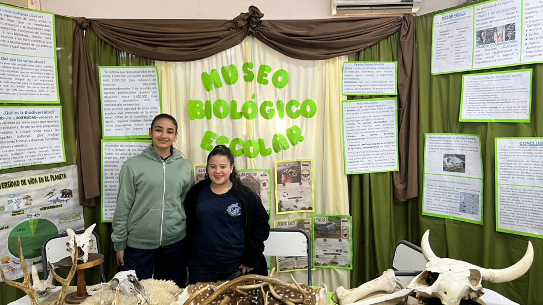
Regresar al Inicio3ro 4ta Turno Mañana, 3ro 1ra Turno Tarde. (50 alumnos).
En un contexto cada vez más digital y tecnológico, donde el uso de pantallas en niños pequeños ha aumentado considerablemente, resulta fundamental promover alternativas de aprendizaje y juego que favorezcan su desarrollo integral. A partir de una encuesta realizada a familias de niños menores de 5 años, surgió la necesidad de diseñar propuestas lúdicas que estimulen la creatividad, la exploración y el desarrollo de habilidades cognitivas y motrices. En este marco, se desarrolló el presente proyecto, que combina la geometría con la tecnología y otras áreas afines. Su objetivo es fomentar el aprendizaje de habilidades STEAM entre los estudiantes de tercer año de la Escuela Técnica “Dr. Juan G. Pujol” de Saladas, Corrientes, mediante la construcción de juguetes encastrables elaborados a partir de cuerpos geométricos. La propuesta integra contenidos de Matemática, Dibujo Técnico, Tecnología e Informática, Formación ética y Ciudadana.
Como aporte a la comunidad, los juguetes elaborados serán donados al sector de pediatría del hospital Regional María Auxiliadora de la ciudad de Saladas, promoviendo el aprendizaje lúdico, el desarrollo perceptivo y la interacción de los niños con materiales educativos especialmente diseñados para su edad.
Actualización 25 de junio de 2026
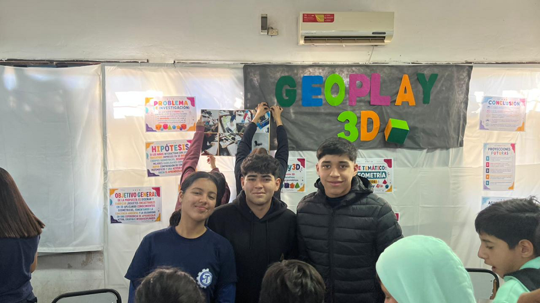
Regresar al Inicio3ro 1ra Turno Noche. (52 alumnos).
Este proyecto se centra en la elaboración de macetas artesanales mediante el uso de una mezcla innovadora de aserrín, cemento, maicena, agua, sal y vinagre. La iniciativa surge de la necesidad de encontrar alternativas sostenibles y económicas para la producción de objetos útiles, fomentando el reciclaje y la creatividad en el ámbito escolar y comunitario.
El objetivo principal es demostrar que, a partir de materiales simples y accesibles, es posible fabricar recipientes resistentes y funcionales para el cultivo de las plantas. Al mismo tiempo que se promueve el cuidado del medio ambiente. El aserrín, proveniente de residuos de madera, se reutiliza como componente estructural; el cemento aporta dureza y estabilidad; la maicena actúa como aglutinante biodegradable; y el vinagre, junto con el agua y la sal contribuye a la cohesión de la mezcla y a la prevención de microorganismos.
La metodología consistió en combinar los ingredientes en proporciones adecuadas hasta obtener una pasta moldeable. Esta mezcla se colocó en moldes para dar forma a las macetas y se dejó sacar durante varios días,permitiendo que el cemento endureciera y que los demás componentes se integraran de manera uniforme.Los resultados muestran que las macetas obtenidas presentan buena resistencia mecánica, una textura agradable y la capacidad de contener tierra y plantas sin filtraciones excesivas. Además, su aspecto artesanal las convierte en piezas atractivas para la decoración y el uso cotidiano.
El proyecto evidencia que es posible reutilizar residuos como el aserrín y combinarlo con otros elementos para obtener productos útiles y sostenibles. Este trabajo no solo aporta soluciones práctica,sino que también promueve la conciencia ambiental y la innovación en el ámbito escolar,demostrando que la ciencia puede aplicarse de manera creativa para resolver problemas cotidianos.
Actualización 25 de junio de 2026
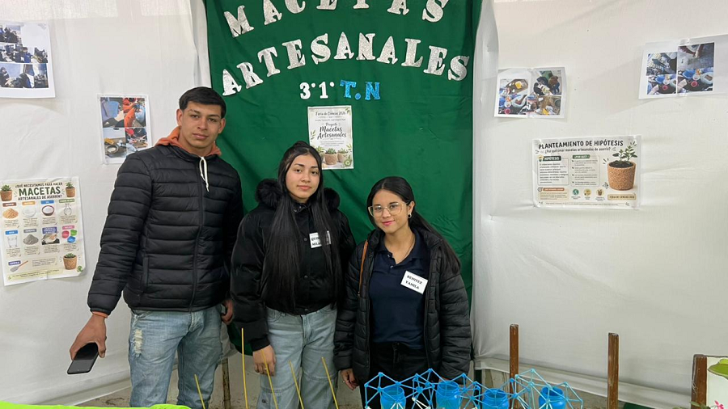
Regresar al Inicio1ro 1ra Extensión Aulica Anguá. (9 alumnos).
El presente proyecto surge ante la necesidad institucional de promover un cambio cultural hacia modelos de alimentación responsables y sostenibles, alineados con la preservación del ambiente. La huerta escolar se constituye como un aula abierta y un laboratorio vivo que derriba la fragmentación horaria tradicional.
Actualización 25 de junio de 2026
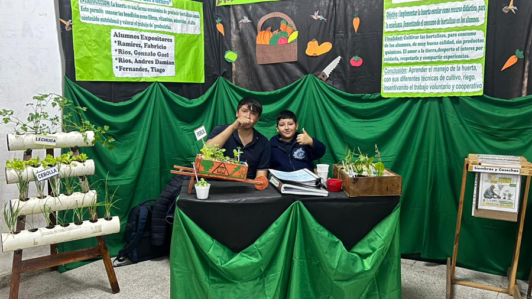
Regresar al Inicio4to 1a Turno Noche.
El presente proyecto de Feria de Ciencias, denominado “El Rincón del Macramé”, surge como una propuesta educativa destinada a integrar los conocimientos adquiridos por los estudiantes de la modalidad Educación Permanente de Jóvenes y Adultos (EPJA) con una experiencia práctica de producción artesanal. Su finalidad es demostrar que la escuela no solamente transmite conocimientos teóricos, sino que también puede brindar herramientas concretas para mejorar la calidad de vida de las personas mediante el desarrollo de habilidades productivas y emprendedoras.
Actualización 25 de junio de 2026
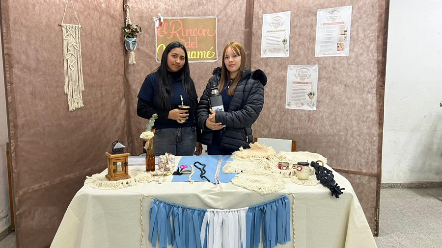
Regresar al Inicio5to 1ra Informática. (25 alumnos).
Re-Corcho-Lis es un proyecto STEAM aborda la problemática ambiental derivada de la generación de residuos sólidos urbanos, focalizándose en el descarte de tapones de corcho en la comunidad de Saladas, Corrientes. A pesar de que el corcho es un material natural con propiedades excepcionales de aislamiento, elasticidad y ligereza, suele desecharse tras un único uso.
Actualización 25 de junio de 2026
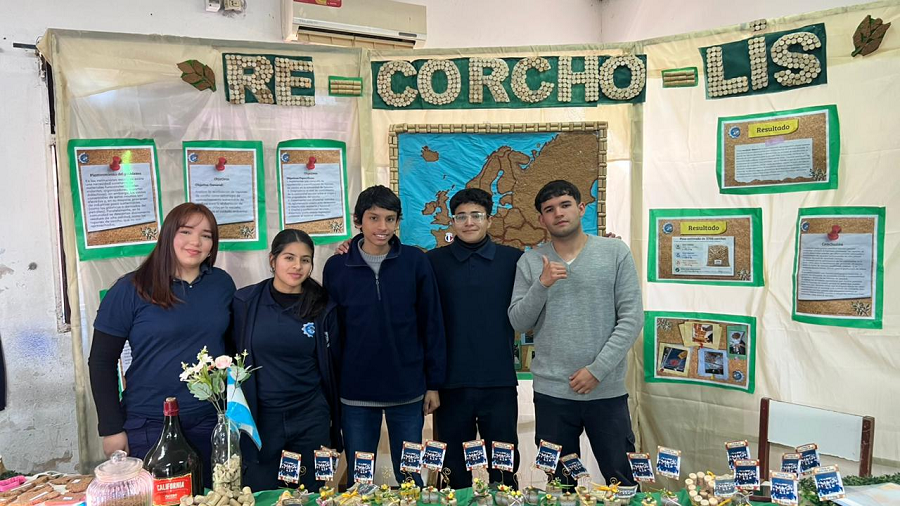
Regresar al Inicio2do 1ra Extensión Aulica Anguá.
El titulo refleja el objetivo central: conectar conocimiento tradicional del campo con validacion cientifica de la medicina moderna. "Sabores Naturales" alude a propiedades organoleticas. "Bienestar Cientifico" demuestra que la ciencia explica el bienestar que abuelas siempre supieron.
Actualización 25 de junio de 2026
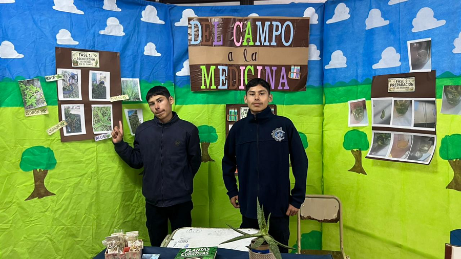
Regresar al Inicio2do 2da Turno Noche. (25 alumnos).
Este proyecto fue pensado por la necesidad de reducir el impacto ambiental generado por los residuos plásticos provenientes de los aserraderos. La reutilización de los zunchos permite disminuir la cantidad de materiales que son eliminados mediante la quema o el enterramiento, contribuyendo al cuidado del ambiente y a la conservación de los recursos naturales.
Además, la propuesta integra conocimientos de distintas áreas, como Ciencias Naturales, Matemática, Tecnología y Educación Ambiental, favoreciendo el aprendizaje interdisciplinario. A través del diseño y la construcción de canastos y paneras, los estudiantes aplican conceptos geométricos, cálculos de área y volumen, técnicas artesanales y principios de reutilización de materiales.
Asimismo, el proyecto permite analizar la posibilidad de desarrollar un emprendimiento socio-productivo basado en la transformación de residuos en productos comercializables, promoviendo la economía circular y generando oportunidades de trabajo sustentable en la comunidad.
Actualización 25 de junio de 2026
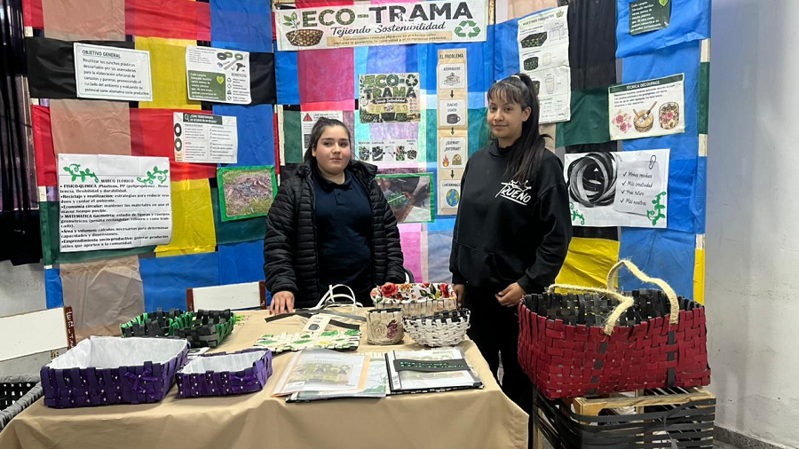
Regresar al Inicio5to 2da Turno Tarde.
Hola, nuestro proyecto se llama Bloques Reciclados.Plástico que la gente tira, como botellas de gaseosa tipo PET, y lo transformamos en bloques para construir. ¿Por qué? Porque el plástico tarda muchísimos años en degradarse y contamina. Pero si lo reciclamos, podemos hacer algo útil: ¡ladrillos ecológicos.
Acá tenemos 4 tipos de bloques hechos con plástico reciclado:
Con estos bloques se pueden armar paredes, casas y juegos. Así cuidamos el planeta y construimos de forma más limpia.
Actualización 25 de junio de 2026
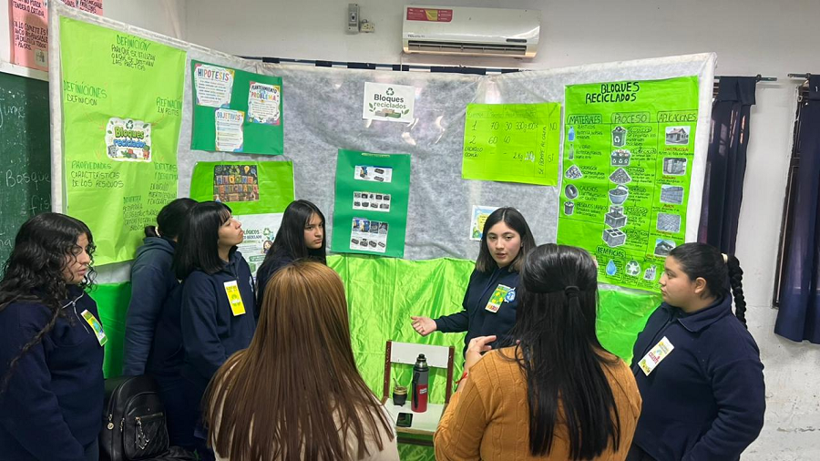
Regresar al Inicio5to 1ra Extensión Aulica Anguá.
Este proyecto ofrece una oportunidad valiosa para explorar la producción de carbón vegetal, una práctica ancestral que continúa siendo relevante como fuente de energía y para distintos usos domésticos. Sin embargo, los métodos tradicionales de carbonización suelen implicar la liberación incontrolada de gases y partículas contaminantes. Este proyecto, iniciado hace dos años, busca implementar tecnologías que permitan recuperar subproductos del proceso. Desde una perspectiva STEAM, promueve el aprendizaje interdisciplinario y la conciencia ambiental con los alumnos del Ciclo Orientado de la Escuela Técnica “Dr. Juan G. Pujol”, Extensión Áulica Angua, Saladas, Corrientes. Los alumnos cuentan con un entorno de extensos montes, diversos ejemplares de árboles y plantaciones en la zona, lo que genera una gran cantidad de residuos forestales, como ramas, cortezas y restos de raleo forestal.
Para dar respuesta a estas necesidades, se propuso corregir los errores de diseño del prototipo 2, creado el año pasado, mediante el diseño de un nuevo reactor que cierre el ciclo, sea autosustentable y optimice el proceso de pirólisis, el cual inicialmente ofrecía un bajo rendimiento de carbón. Con esta reingeniería, no solo se busca maximizar la obtención de carbón como recurso energético, sino también diversificar la producción hacia dos subproductos clave: por un lado, la transformación del carbón en carbono activado para su aplicación en filtros de agua y cosmética; y, por otro, la refinación del humo líquido o ácido piroleñoso mediante un sistema de filtrado selectivo que reduzca la presencia de alquitrán y mejore la calidad del producto obtenido.
Actualización 25 de junio de 2026
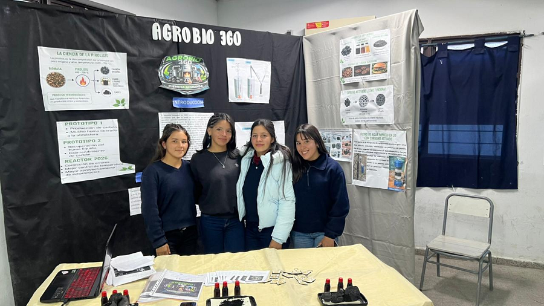
Regresar al Inicio3ro 3a Turno Mañana. (22 alumnos).
El proyecto EcoBrillo consiste en la obtención de un barniz mediante la reutilización de tergopol reciclado. A través de un proceso de transformación, este residuo plástico se convierte en un producto capaz de brindar protección y brillo a diferentes superficies.
La investigación busca demostrar la viabilidad de reutilizar materiales descartados, contribuyendo a la disminución de residuos y fomentando prácticas sustentables. Además, permite analizar las propiedades del tergopol, los cambios que experimenta durante el proceso y los beneficios ambientales que aporta su reutilización. De esta manera, se promueve la conciencia ecológica y el aprovechamiento responsable de los recursos disponibles.
Actualización 25 de junio de 2026
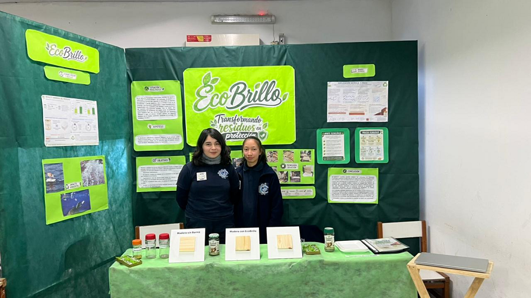
Regresar al Inicio2do 4ta Turno Mañana (29 Alumnos).
Este proyecto consiste en el diseño y la construcción de refugios sustentables para perros en situación de calle, utilizando envases de tetrabrik como principal material de aislamiento térmico.Las características más importantes que se busca demostrar son:
Nos enfocamos en estas propiedades debido a que la humedad ambiental y las bajas temperaturas representan factores de riesgo para los animales.
A lo largo de este trabajo se demostrará el potencial de los envases de tetrabrik como material aislante, evidenciando su capacidad para reducir los efectos de la humedad y conservar el calor, contribuyendo así al bienestar y la protección de los animales.
Actualización 25 de junio de 2026
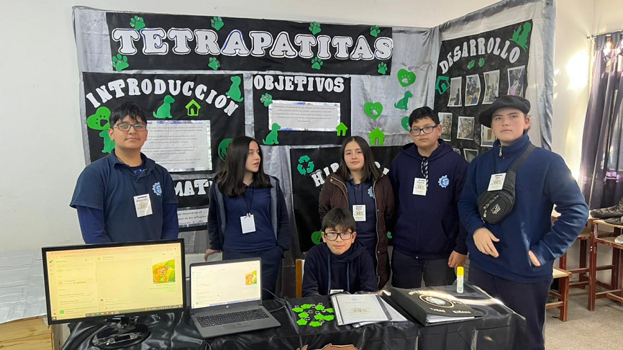
Regresar al Inicio4to 1ra Turno Mañana. (22 alumnos).
La sociedad actual se encuentra cada vez más vinculada a los avances tecnológicos y a la automatización de diferentes actividades cotidianas. En este contexto, la domótica surge como una herramienta capaz de mejorar la calidad de vida de las personas mediante el control inteligente de los hogares, brindando mayor seguridad, confort y eficiencia energética.
Este proyecto propone el diseño y construcción de una maqueta de vivienda inteligente que integra sensores, actuadores y sistemas de control para automatizar distintas funciones del hogar. A través de esta experiencia, los estudiantes investigan, aplican conocimientos de diversas áreas y desarrollan soluciones tecnológicas accesibles orientadas al cuidado de los recursos, la sustentabilidad y el bienestar de la comunidad.
Además, el proyecto promueve el trabajo interdisciplinario, la resolución de problemas reales y el desarrollo de competencias técnicas necesarias para afrontar los desafíos tecnológicos del futuro.
Actualización 25 de junio de 2026
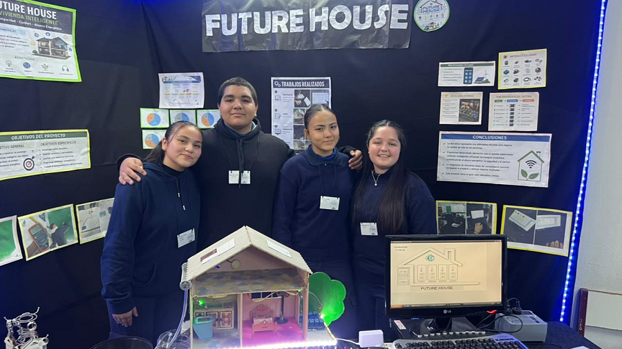
Regresar al Inicio4to Año 2da División - Turno Tarde (45 alumnos).
EcoBloq es un proyecto científico-tecnológico desarrollado por los estudiantes de 4.º año 2.ª división de la Escuela Técnica «Dr. Juan Gregorio Pujol», cuyo objetivo principal consiste en reutilizar residuos plásticos mediante la fabricación de eco botellas para aplicaciones constructivas sustentables.
El proyecto surge como respuesta a la problemática ambiental ocasionada por los residuos plásticos de un solo uso, que tardan cientos de años en degradarse y representan una amenaza para los ecosistemas.
Se recolectaron botellas PET de 1,5 litros y residuos plásticos limpios y secos. Estos materiales fueron compactados manualmente hasta obtener 125 eco botellas con pesos comprendidos entre 480 g y 550 g.
Posteriormente se construyó una pared demostrativa de 2,20 m de ancho por 2,40 m de altura, utilizando una estructura de madera y tejido metálico, fijando las eco botellas mediante alambre. Se realizaron pruebas de peso, resistencia y caída, observándose que el grado de compactación influye directamente sobre la rigidez y resistencia de las botellas.
El proyecto se desarrolló de manera interdisciplinaria con la participación de diversas áreas curriculares, favoreciendo el trabajo colaborativo y promoviendo la conciencia ambiental.
Los resultados obtenidos permitieron comprobar que las eco botellas constituyen una alternativa sustentable para reutilizar residuos plásticos y aplicarlos en construcciones sencillas.
Actualización 25 de junio de 2026
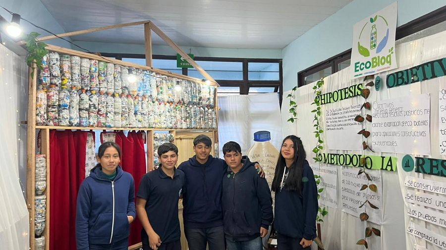
Regresar al Inicio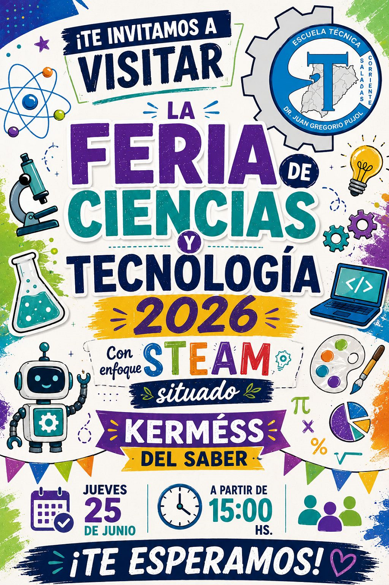